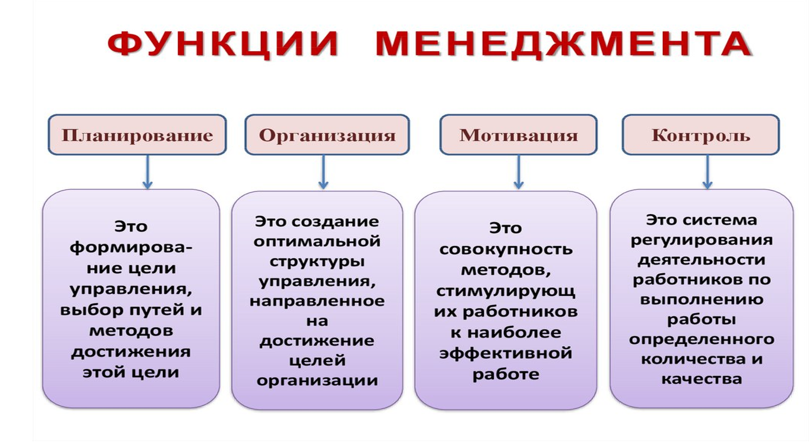

Менеджмент - специфический вид деятельности, который занимается управлением. Управление - осознанная целенаправленная деятельность человека, с помощью которой он упорядочивает и подчиняет своим интересам элементы внешней среды: общества, живой и неживой природы.
Сущность менеджмента - управлять всем: производством, финансами, кадрами, ресурсами для упорядочения системы управления, от исходной ситуации - к улучшению результатов.

Каждая функция менеджмента характеризуется однородностью содержания и целевой направленностью. Функции являются составными частями любого процесса управления вне зависимости от особенностей Управляемая подсистема (объект) Управляемая подсистема (субъект) Возмущающие действия Внешняя среда 14 (размера, назначения, формы собственности и т. д.) той или иной организации. Поэтому их называют основными, или общими. Все рассматриваемые функции (основные и конкретные) имеют две общие характеристики: •они обе требуют принятия решений •для всех необходимы коммуникации, обмен информацией. Эти характеристики связывают все управленческие функции, и поэтому их часто называют связующими процессами
Категории менеджмента
Категории менеджмента - наиболее общие и фундаментальные понятия, отражающие существенные всеобщие свойства и устойчивые отношения (связи) в процессах и структуре управления организацией. К числу основных категорий менеджмента следует отнести: •понятие и сущность менеджмента; •виды менеджмента; •объекты и субъекты менеджмента; •функции менеджмента; •иерархия менеджмента; •организационная структура и схема управления; •принципы менеджмента; •методы менеджмента; •стиль руководства. Категории менеджмента объясняют сущность управления как специфического вида человеческой деятельности, возникшего как потребность и в тоже время условие достижения поставленных целей, как в индивидуальной, так и в совместной деятельности